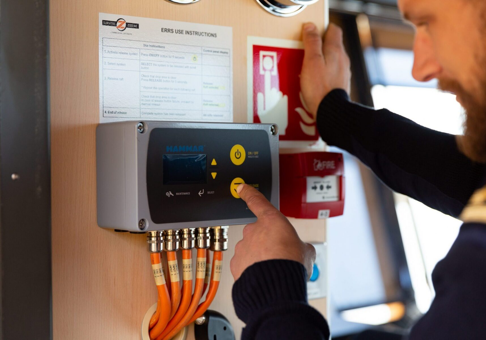
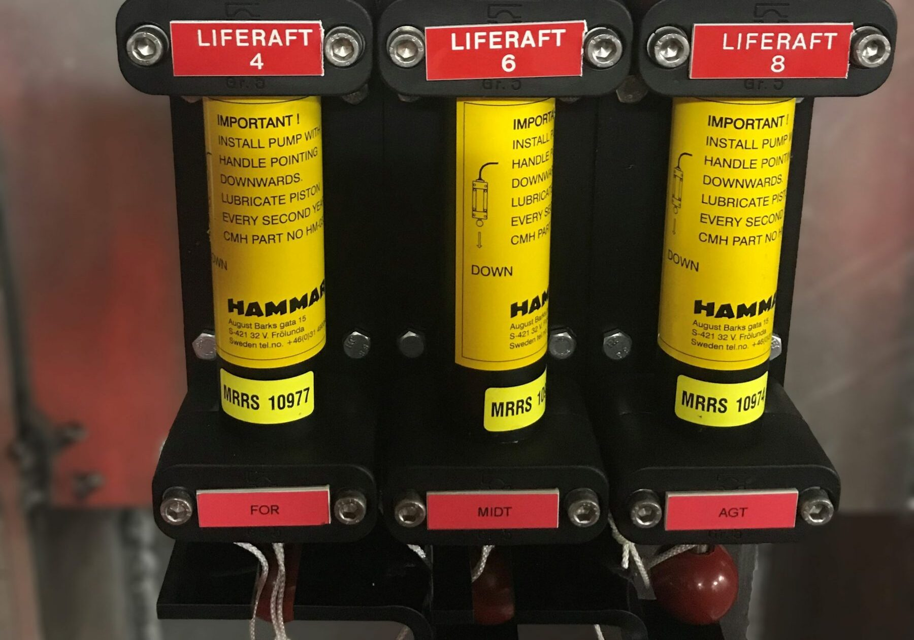
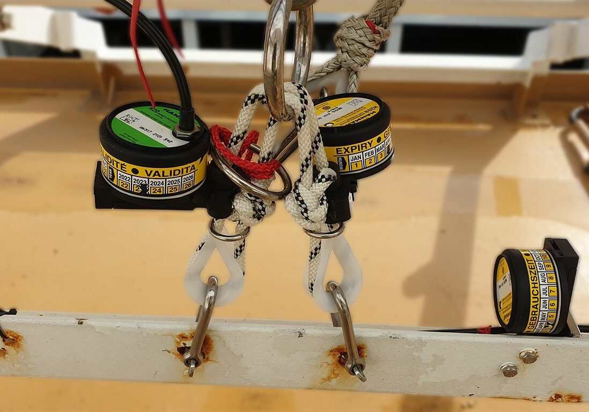
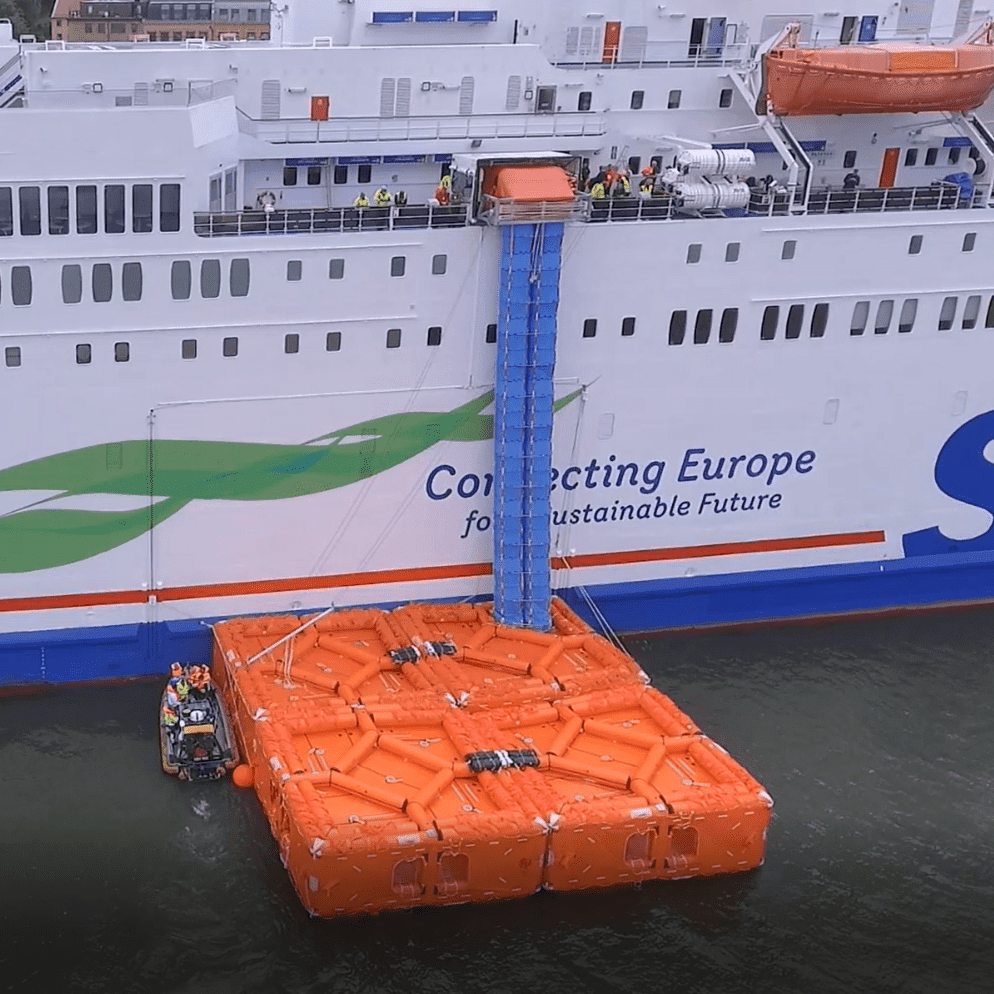
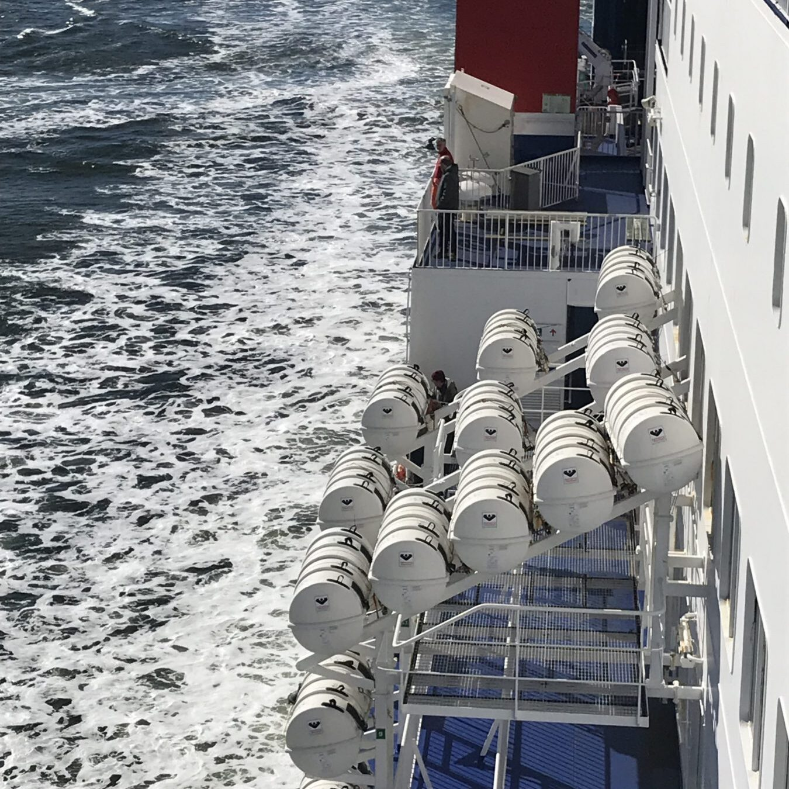
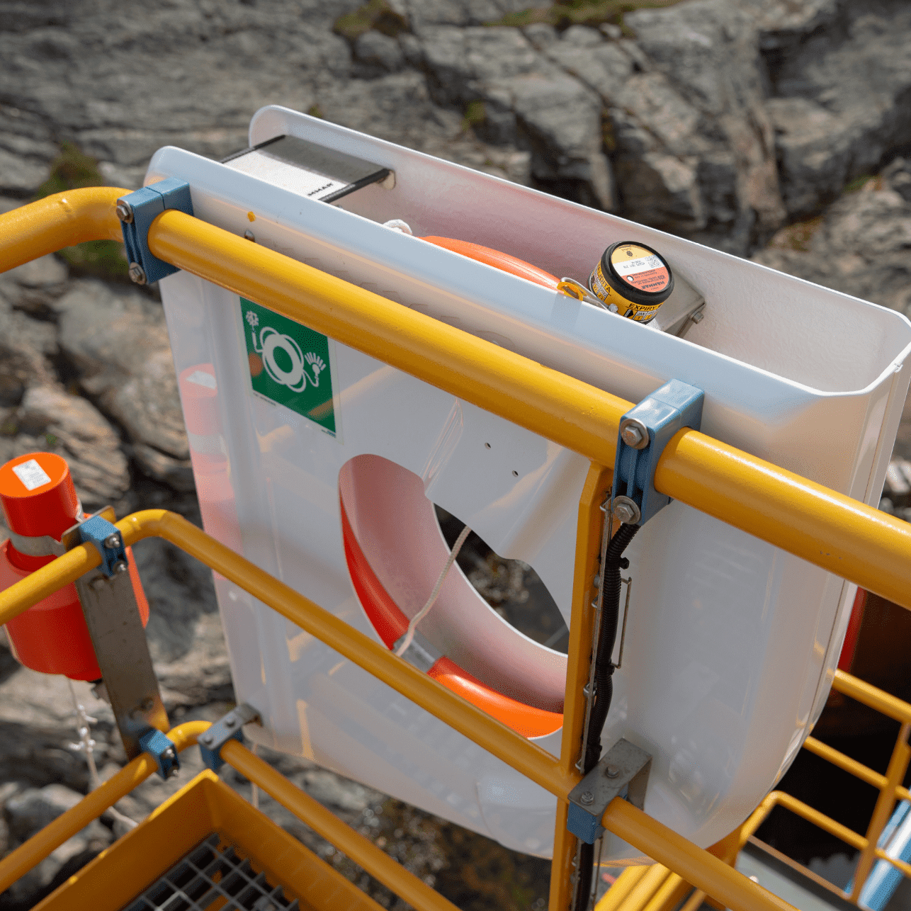
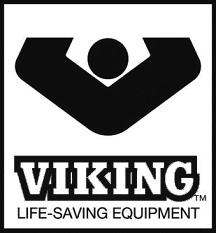

REMOTE RELEASE SYSTEMS
Time is precious in an emergency at sea. Each action undertaken to save time will also increase the possibilities to save lives. Hammar's Remote Release Systems (RSS) are designed to enable rapid release of liferafts and other life-saving equipment, with the least amount of effort and risk for the crew. The systems can be operated from the bridge, muster station, or other strategic locations onboard. Hammar's systems are tested and approved to recognized marine standards.
There are two different systems that can be used separately or in various combinations on the same ship:
ELECTRONIC REMOTE RELEASE SYSTEM
Hammar's Electronic Remote Release Systems (ERRS) use an electrical signal to activate one or more H20 release units. An electronic Control Unit commands the activation of one or several Hammar H20 Electronic Release Units (ERU) with the push of a button. It is also possible to add input sensors such as sensors for water or list angle detection. ERRS has no limitation in the distance between the Control Unit and the Release Unit.
Hammar ERRS is especially suited for:
- Major systems with many release point liferafts or units
- Installations more than 50 meters in length
REMOTE OPERATED
Most of the HAMMAR ERRS can be operated from several remote release positions by adding one or more remote push buttons (Input Sensor) to the Control Unit. These units can activate H20 ERU (Electronic Release Unit) or relay outputs (depending on configuration). It is thus a very flexible system for the management of safety appliances on board.
SYSTEM CHECKS
Most HAMMAR ERRS units automatically perform system checks; which monitors the internal battery, emergency power voltage, ERU circuits, and the wiring to external activation switches. If the system check detects an error, an alarm message will appear on a display or on the LED indicator (depending on unit) and an alarm output is activated.
POWER SUPPLY
The ERRS system is powered by the ship's 24 VDC emergency power supply. Most of the ERRS Control Units are also equipped with a back-up battery to enable operation even if the ship´s power supply is down. The systems are designed to be user-friendly, require a minimum of maintenance, and easy to install, even for retrofit.

ERRS - SYSTEM OVERVIEW
Electronic Remote Release System (ERRS) gives you the opportunity to launch safety appliances or an object from a distance in a controlled manner. The activation/launch can be trigged automatically from a sensor or manually from a push button.
For the system to be operational you need some key components:


LIST ANGLE DETECTION
A float-free arrangement with a SOLAS-approved HRU (Hydrostatic Release Unit) will automatically release the liferafts or EPIRBs (Emergency Position Indicating Radio Beacon) at a depth between 1,5 to 4 meters. When a ship capsizes without sinking, there is a major risk that the life-saving appliances are trapped under the craft or never released.
With Hammar's List Angle Detection (LAD) technology, liferafts and EPIRBs can be automatically released at a specified degree of list when a vessel capsizes. The released safety equipment reaches the surface before the ship flips around, significantly reducing the risk of being trapped or entangled in constructions on deck.

MANUAL REMOTE RELEASE SYSTEM
Manual Remote Release Systems (MRRS) activate one or more H20 release units using a vacuum created by a pump. The MRRS is suitable for smaller and less complex arrangements. MRRS are ideal for installations of up to 50 meters in length. Using a hand-operated pneumatic pump, the air inside the tubing is evacuated and creates an under pressure inside the system. The membrane inside the Hammar H20 unit is lifted, and the spring-loaded knife is released.
The Hammar MRRS is especially suited for:
- Smaller systems with few liferafts or other units
- Installations up to 50 meters in length
MRRS - SYSTEM OVERVIEW
Manual Remote Release Systems (MRRS) allow you to launch safety appliances or an object from a distance in a controlled manner. You can trigger the activation by using the vacuum pump.
For the system to be operational, you need some key components:




H20 DUAL ASSEMBLY
The H20 Dual Assembly is a combination of release units, including two or more H20 units and/or having two connection points to the deck. The H20 Dual Assembly is used in raft arrangements and RRS (Remote Release Systems) when more than one release criteria are to be fulfilled.

EXAMPLES OF REMOTE RELEASE SYSTEM APPLICATIONS

LAUNCH OF MARINE EVACUATION SYSTEMS
RRS (Remote Release Systems) are often used in MES (Marine Evacuation Systems) applications for a reliable and accurate launch of different sections in a pre-determined sequence. How and when to initiate each section can be automatically, semi-automatically, or manually controlled.

CONTROLLED RELEASE OF LIFERAFTS
Liferafts can efficiently be launched from racks and cradles, even when they are remotely positioned with no easy access onboard the vessel. These arrangements can optimize the use of valuable deck space and keep crew members safe and out of harm when releasing the liferaft containers.

REMOTE RELEASE OF LIFEBUOYS
A remotely operated lifebuoy on the bridge wing saves precious time when a man-over-board situation occurs, even if it is not mandatory on all ships. The Hammar Lifebuoy Release System rapidly releases the buoy in a controlled manner by pushing an electronic push button.
MAINTENANCE AND TESTING
The maintenance and service of the RRS (Remote Release System) are easy and cost-effective. The systems should be tested and checked regularly, at least once a year. This service can preferably be carried out together with the service of the liferaft. Hammar's RRUs must be replaced after two years of service, or otherwise stated on the product.


{kind=link}
THE WORLD'S LEADING MARINE EVACUATION SYSTEM MANUFACTURER'S USE HAMMAR REMOTE RELEASE SYSTEMS


Where to buy?
Find your closest Hammar Distributor